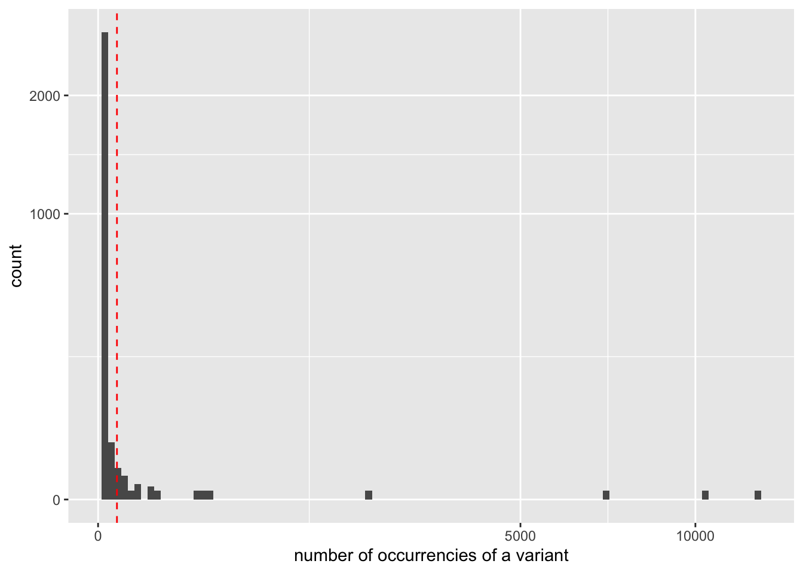
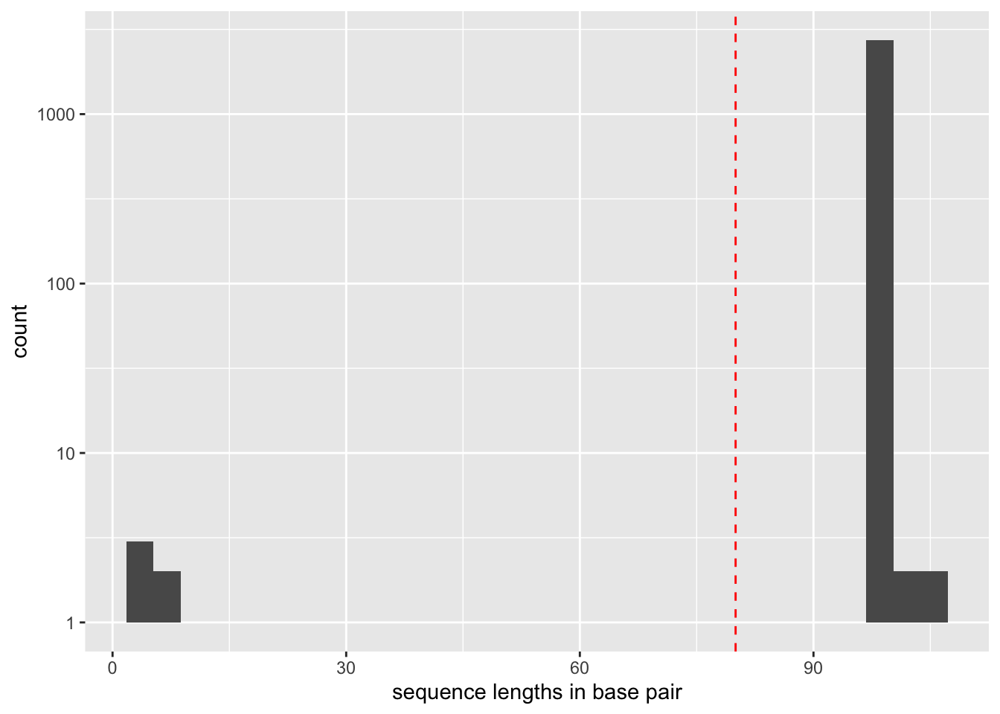

tar zxvf wolf_diet.tgz2 OBITools V4 Tutorial
Here is a short tutorial on how to analyze DNA metabarcoding data produced on Illumina sequencers using:
- the OBITools
- some basic Unix commands
2.1 Wolves’ diet based on DNA metabarcoding
The data used in this tutorial correspond to the analysis of four wolf scats, using the protocol published in Shehzad et al. (2012) for assessing carnivore diet. After extracting DNA from the faeces, the DNA amplifications were carried out using the primers TTAGATACCCCACTATGC and TAGAACAGGCTCCTCTAG amplifiying the 12S-V5 region (Riaz et al. 2011), together with a wolf blocking oligonucleotide.
The complete data set can be downloaded here: the tutorial dataset
Once the data file is downloaded, using a UNIX terminal unarchive the data from the tgz file.
That command create a new directory named wolf_data containing every required data files:
fastq <fastq>files resulting of aGA IIx (Illumina) paired-end (2 x 108 bp) sequencing assay of DNA extracted and amplified from four wolf faeces:wolf_F.fastqwolf_R.fastq
the file describing the primers and tags used for all samples sequenced:
wolf_diet_ngsfilter.txtThe tags correspond to short and specific sequences added on the 5' end of each primer to distinguish the different samples
the file containing the reference database in a fasta format:
db_v05_r117.fastaThis reference database has been extracted from the release 117 of EMBL usingobipcr
To not mix raw data and processed data a new directory called results is created.
mkdir results2.2 Step by step analysis
2.2.1 Recover full sequence reads from forward and reverse partial reads
When using the result of a paired-end sequencing assay with supposedly overlapping forward and reverse reads, the first step is to recover the assembled sequence.
The forward and reverse reads of the same fragment are at the same line position in the two fastq files obtained after sequencing. Based on these two files, the assembly of the forward and reverse reads is done with the obipairing utility that aligns the two reads and returns the reconstructed sequence.
In our case, the command is:
obipairing --min-identity=0.8 \
--min-overlap=10 \
-F wolf_data/wolf_F.fastq \
-R wolf_data/wolf_R.fastq \
> results/wolf.fastq The --min-identity and --min-overlap options allow discarding sequences with low alignment quality. If after the aligment, the overlaping parts of the reads is shorter than 10 base pairs or the similarity over this aligned region is below 80% of identity, in the output file, the forward and reverse reads are not aligned but concatenated, and the value of the mode attribute in the sequence header is set to joined instead of alignment.
2.2.2 Remove unaligned sequence records
Unaligned sequences (:pymode=joined) cannot be used. The following command allows removing them from the dataset:
obigrep -p 'annotations.mode != "join"' \
results/wolf.fastq > results/wolf.ali.fastqThe -p requires a go like expression. annotations.mode != "join" means that if the value of the mode annotation of a sequence is different from join, the corresponding sequence record will be kept.
The first sequence record of wolf.ali.fastq can be obtained using the following command line:
head -n 4 results/wolf.ali.fastqThe folling piece of code appears on thew window of tour terminal.
@HELIUM_000100422_612GNAAXX:7:108:5640:3823#0/1 {"ali_dir":"left","ali_length":62,"mode":"alignment","pairing_mismatches":{"(T:26)->(G:13)":62,"(T:34)->(G:18)":48},"score":484,"score_norm":0.968,"seq_a_single":46,"seq_ab_match":60,"seq_b_single":46}
ccgcctcctttagataccccactatgcttagccctaaacacaagtaattaatataacaaaattgttcgccagagtactaccggcaatagcttaaaactcaaaggacttggcggtgctttatacccttctagaggagcctgttctaaggaggcgg
+
CCCCCCCBCCCCCCCCCCCCCCCCCCCCCCBCCCCCBCCCCCCC<CcCccbe[`F`accXV<TA\RYU\\ee_e[XZ[XEEEEEEEEEE?EEEEEEEEEEDEEEEEEECCCCCCCCCCCCCCCCCCCCCCCACCCCCACCCCCCCCCCCCCCCC2.2.3 Assign each sequence record to the corresponding sample/marker combination
Each sequence record is assigned to its corresponding sample and marker using the data provided in a text file (here wolf_diet_ngsfilter.txt). This text file contains one line per sample, with the name of the experiment (several experiments can be included in the same file), the name of the tags (for example: aattaac if the same tag has been used on each extremity of the PCR products, or aattaac:gaagtag if the tags were different), the sequence of the forward primer, the sequence of the reverse primer, the letter T or F for sample identification using the forward primer and tag only or using both primers and both tags, respectively (see obimultiplex for details).
obimultiplex -t wolf_data/wolf_diet_ngsfilter.txt \
-u results/unidentified.fastq \
results/wolf.ali.fastq \
> results/wolf.ali.assigned.fastqThis command creates two files:
unidentified.fastqcontaining all the sequence records that were not assigned to a sample/marker combinationwolf.ali.assigned.fastqcontaining all the sequence records that were properly assigned to a sample/marker combination
Note that each sequence record of the wolf.ali.assigned.fastq file contains only the barcode sequence as the sequences of primers and tags are removed by the obimultiplex program. Information concerning the experiment, sample, primers and tags is added as attributes in the sequence header.
For instance, the first sequence record of wolf.ali.assigned.fastq is:
@HELIUM_000100422_612GNAAXX:7:108:5640:3823#0/1_sub[28..127] {"ali_dir":"left","ali_length":62,"direction":"direct","experiment":"wolf_diet","forward_match":"ttagataccccactatgc","forward_mismatches":0,"forward_primer":"ttagataccccactatgc","forward_tag":"gcctcct","mode":"alignment","pairing_mismatches":{"(T:26)->(G:13)":35,"(T:34)->(G:18)":21},"reverse_match":"tagaacaggctcctctag","reverse_mismatches":0,"reverse_primer":"tagaacaggctcctctag","reverse_tag":"gcctcct","sample":"29a_F260619","score":484,"score_norm":0.968,"seq_a_single":46,"seq_ab_match":60,"seq_b_single":46}
ttagccctaaacacaagtaattaatataacaaaattgttcgccagagtactaccggcaatagcttaaaactcaaaggacttggcggtgctttataccctt
+
CCCBCCCCCBCCCCCCC<CcCccbe[`F`accXV<TA\RYU\\ee_e[XZ[XEEEEEEEEEE?EEEEEEEEEEDEEEEEEECCCCCCCCCCCCCCCCCCC2.2.4 Dereplicate reads into uniq sequences
The same DNA molecule can be sequenced several times. In order to reduce both file size and computations time, and to get easier interpretable results, it is convenient to work with unique sequences instead of reads. To dereplicate such reads into unique sequences, we use the obiuniq command.
| Definition: Dereplicate reads into unique sequences |
Definition adapted from Seguritan and Rohwer (2001) |
For dereplication, we use the obiuniq command with the -m sample. The -m sample option is used to keep the information of the samples of origin for each uniquesequence.
obiuniq -m sample \
results/wolf.ali.assigned.fastq \
> results/wolf.ali.assigned.uniq.fastaNote that obiuniq returns a fasta file.
The first sequence record of wolf.ali.assigned.uniq.fasta is:
>HELIUM_000100422_612GNAAXX:7:93:6991:1942#0/1_sub[28..126] {"ali_dir":"left","ali_length":63,"count":1,"direction":"reverse","experiment":"wolf_diet","forward_match":"ttagataccccactatgc","forward_mismatches":0,"forward_primer":"ttagataccccactatgc","forward_tag":"gaatatc","merged_sample":{"26a_F040644":1},"mode":"alignment","pairing_mismatches":{"(A:10)->(G:34)":76,"(C:06)->(A:34)":58},"reverse_match":"tagaacaggctcctctag","reverse_mismatches":0,"reverse_primer":"tagaacaggctcctctag","reverse_tag":"gaatatc","score":730,"score_norm":0.968,"seq_a_single":45,"seq_ab_match":61,"seq_b_single":45}
ttagccctaaacataaacattcaataaacaagaatgttcgccagagaactactagcaaca
gcctgaaactcaaaggacttggcggtgctttatatccctThe run of obiuniq has added two key=values entries in the header of the fasta sequence:
"merged_sample":{"29a_F260619":1}: this sequence have been found once in a single sample called 29a_F260619"count":1: the total count for this sequence is \(1\)
To keep only these two attributes, we can use the obiannotate command:
obiannotate -k count -k merged_sample \
results/wolf.ali.assigned.uniq.fasta \
> results/wolf.ali.assigned.simple.fastaThe first five sequence records of wolf.ali.assigned.simple.fasta become:
>HELIUM_000100422_612GNAAXX:7:26:18930:11105#0/1_sub[28..127] {"count":1,"merged_sample":{"29a_F260619":1}}
ttagccctaaacacaagtaattaatataacaaaatwattcgcyagagtactacmggcaat
agctyaaarctcamagrwcttggcggtgctttataccctt
>HELIUM_000100422_612GNAAXX:7:58:5711:11399#0/1_sub[28..127] {"count":1,"merged_sample":{"29a_F260619":1}}
ttagccctaaacacaagtaattaatataacaaaattattcgccagagtwctaccgssaat
agcttaaaactcaaaggactgggcggtgctttataccctt
>HELIUM_000100422_612GNAAXX:7:100:15836:9304#0/1_sub[28..127] {"count":1,"merged_sample":{"29a_F260619":1}}
ttagccctaaacatagataattacacaaacaaaattgttcaccagagtactagcggcaac
agcttaaaactcaaaggacttggcggtgctttataccctt
>HELIUM_000100422_612GNAAXX:7:55:13242:9085#0/1_sub[28..126] {"count":4,"merged_sample":{"26a_F040644":4}}
ttagccctaaacataaacattcaataaacaagagtgttcgccagagtactactagcaaca
gcctgaaactcaaaggacttggcggtgctttacatccct
>HELIUM_000100422_612GNAAXX:7:86:8429:13723#0/1_sub[28..127] {"count":7,"merged_sample":{"15a_F730814":5,"29a_F260619":2}}
ttagccctaaacacaagtaattaatataacaaaattattcgccagagtactaccggcaat
agcttaaaactcaaaggactcggcggtgctttataccctt2.2.5 Denoise the sequence dataset
To have a set of sequences assigned to their corresponding samples does not mean that all sequences are biologically meaningful i.e. some of these sequences can contains PCR and/or sequencing errors, or chimeras.
Tag the sequences for PCR errors (sequence variants)
The obiclean program tags sequence variants as potential error generated during PCR amplification. We ask it to keep the head sequences (-H option) that are sequences which are not variants of another sequence with a count greater than 5% of their own count (-r 0.05 option).
obiclean -s sample -r 0.05 -H \
results/wolf.ali.assigned.simple.fasta \
> results/wolf.ali.assigned.simple.clean.fasta One of the sequence records of wolf.ali.assigned.simple.clean.fasta is:
>HELIUM_000100422_612GNAAXX:7:66:4039:8016#0/1_sub[28..127] {"count":17,"merged_sample":{"13a_F730603":17},"obiclean_head":true,"obiclean_headcount":1,"obiclean_internalcount":0,"obi
clean_samplecount":1,"obiclean_singletoncount":0,"obiclean_status":{"13a_F730603":"h"},"obiclean_weight":{"13a_F730603":25}}
ctagccttaaacacaaatagttatgcaaacaaaactattcgccagagtactaccggcaac
agcccaaaactcaaaggacttggcggtgcttcacacccttTo remove such sequences as much as possible, we first discard rare sequences and then rsequence variants that likely correspond to artifacts.
Get some statistics about sequence counts
obicount results/wolf.ali.assigned.simple.clean.fastatime="2023-02-02T23:07:30+01:00" level=info msg="Appending results/wolf.ali.assigned.simple.clean.fasta file\n"
2749 36409 273387The dataset contains \(4313\) sequences variant corresponding to 42452 sequence reads. Most of the variants occur only a single time in the complete dataset and are usualy named singletons
obigrep -p 'sequence.Count() == 1' results/wolf.ali.assigned.simple.clean.fasta \
| obicounttime="2023-02-02T23:07:30+01:00" level=info msg="Reading sequences from stdin in guessed\n"
time="2023-02-02T23:07:30+01:00" level=info msg="Appending results/wolf.ali.assigned.simple.clean.fasta file\n"
time="2023-02-02T23:07:30+01:00" level=info msg="On output use JSON headers"
2309 2309 229912In that dataset sigletons corresponds to \(3511\) variants.
Using R and the ROBIFastread package able to read headers of the fasta files produced by OBITools, we can get more complete statistics on the distribution of occurrencies.
library(ROBIFastread)
library(ggplot2)
seqs <- read_obifasta("results/wolf.ali.assigned.simple.clean.fasta",keys="count")
ggplot(data = seqs, mapping=aes(x = count)) +
geom_histogram(bins=100) +
scale_y_sqrt() +
scale_x_sqrt() +
geom_vline(xintercept = 10, col="red", lty=2) +
xlab("number of occurrencies of a variant") 
In a similar way it is also possible to plot the distribution of the sequence length.
ggplot(data = seqs, mapping=aes(x = nchar(sequence))) +
geom_histogram() +
scale_y_log10() +
geom_vline(xintercept = 80, col="red", lty=2) +
xlab("sequence lengths in base pair")
Keep only the sequences having a count greater or equal to 10 and a length shorter than 80 bp
Based on the previous observation, we set the cut-off for keeping sequences for further analysis to a count of 10. To do this, we use the obigrep <scripts/obigrep> command. The -p 'count>=10' option means that the python expression :pycount>=10 must be evaluated to :pyTrue for each sequence to be kept. Based on previous knowledge we also remove sequences with a length shorter than 80 bp (option -l) as we know that the amplified 12S-V5 barcode for vertebrates must have a length around 100bp.
obigrep -l 80 -p 'sequence.Count() >= 10' results/wolf.ali.assigned.simple.clean.fasta \
> results/wolf.ali.assigned.simple.clean.c10.l80.fastaThe first sequence record of results/wolf.ali.assigned.simple.clean.c10.l80.fasta is:
>HELIUM_000100422_612GNAAXX:7:22:2603:18023#0/1_sub[28..127] {"count":12182,"merged_sample":{"15a_F730814":7559,"29a_F260619":4623},"obiclean_head":true,"obiclean_headcount":2,"obiclean_internalcount":0,"obiclean_samplecount":2,"obiclean_singletoncount":0,"obiclean_status":{"15a_F730814":"h","29a_F260619":"h"},"obiclean_weight":{"15a_F730814":9165,"29a_F260619":6275}}
ttagccctaaacacaagtaattaatataacaaaattattcgccagagtactaccggcaat
agcttaaaactcaaaggacttggcggtgctttatacccttAt that time in the data cleanning we have conserved :
obicount results/wolf.ali.assigned.simple.clean.c10.l80.fastatime="2023-02-02T23:07:31+01:00" level=info msg="Appending results/wolf.ali.assigned.simple.clean.c10.l80.fasta file\n"
26 31337 25852.2.6 Taxonomic assignment of sequences
Once denoising has been done, the next step in diet analysis is to assign the barcodes to the corresponding species in order to get the complete list of species associated to each sample.
Taxonomic assignment of sequences requires a reference database compiling all possible species to be identified in the sample. Assignment is then done based on sequence comparison between sample sequences and reference sequences.
Download the taxonomy
It is always possible to download the complete taxonomy from NCBI using the following commands.
mkdir TAXO
cd TAXO
curl http://ftp.ncbi.nih.gov/pub/taxonomy/taxdump.tar.gz \
| tar -zxvf -
cd ..For people have a low speed internet connection, a copy of the taxdump.tar.gz file is provided in the wolf_data directory. The NCBI taxonomy is dayly updated, but the one provided here is ok for running this tutorial.
To build the TAXO directory from the provided taxdump.tar.gz, you need to execute the following commands
mkdir TAXO
cd TAXO
tar zxvf wolf_data/taxdump.tar.gz
cd ..Build a reference database
One way to build the reference database is to use the obipcr program to simulate a PCR and extract all sequences from a general purpose DNA database such as genbank or EMBL that can be amplified in silico by the two primers (here TTAGATACCCCACTATGC and TAGAACAGGCTCCTCTAG) used for PCR amplification.
The two steps to build this reference database would then be
Today, the easiest database to download is Genbank. But this will take you more than a day and occupy more than half a terabyte on your hard drive. In the
wolf_datadirectory, a shell script calleddownload_gb.shis provided to perform this task. It requires that the programswget2andcurlare available on your computer.Use
obipcrto simulate amplification and build a reference database based on the putatively amplified barcodes and their recorded taxonomic information.
As these steps can take a long time (about a day for the download and an hour for the PCR), we already provide the reference database produced by the following commands so you can skip its construction. Note that as the Genbank and taxonomic database evolve frequently, if you run the following commands you may get different results.
Download the sequences
mkdir genbank
cd genbank
../wolf_data/install_gb.sh
cd ..DO NOT RUN THIS COMMAND EXCEPT IF YOU ARE REALLY CONSIENT OF THE TIME AND DISK SPACE REQUIRED.
Use obipcr to simulate an in silico` PCR
obipcr -t TAXO -e 3 -l 50 -L 150 \
--forward TTAGATACCCCACTATGC \
--reverse TAGAACAGGCTCCTCTAG \
--no-order \
genbank/Release-251/gb*.seq.gz
> results/v05.pcr.fastaNote that the primers must be in the same order both in wolf_diet_ngsfilter.txt and in the obipcr command. The part of the path indicating the Genbank release can change. Please check in your genbank directory the exact name of your release.
Clean the database
- filter sequences so that they have a good taxonomic description at the species, genus, and family levels (
obigrepcommand command below). - remove redundant sequences (
obiuniqcommand below). - ensure that the dereplicated sequences have a taxid at the family level (
obigrepcommand below). - ensure that sequences each have a unique identification (
obiannotatecommand below)
obigrep -t TAXO \
--require-rank species \
--require-rank genus \
--require-rank family \
results/v05.ecopcr > results/v05_clean.fasta
obiuniq -c taxid \
results/v05_clean.fasta \
> results/v05_clean_uniq.fasta
obirefidx -t TAXO results/v05_clean_uniq.fasta \
> results/v05_clean_uniq.indexed.fastaWarning
From now on, for the sake of clarity, the following commands will use the filenames of the files provided with the tutorial. If you decided to run the last steps and use the files you have produced, you'll have to use results/v05_clean_uniq.indexed.fasta instead of wolf_data/db_v05_r117.indexed.fasta.
2.2.7 Assign each sequence to a taxon
Once the reference database is built, taxonomic assignment can be carried out using the obitag command.
obitag -t TAXO -R wolf_data/db_v05_r117.indexed.fasta \
results/wolf.ali.assigned.simple.clean.c10.l80.fasta \
> results/wolf.ali.assigned.simple.clean.c10.l80.taxo.fastaThe obitag adds several attributes in the sequence record header, among them:
- obitag_bestmatch=ACCESSION where ACCESSION is the id of hte sequence in the reference database that best aligns to the query sequence;
- obitag_bestid=FLOAT where FLOAT*100 is the percentage of identity between the best match sequence and the query sequence;
- taxid=TAXID where TAXID is the final assignation of the sequence by
obitag - scientific_name=NAME where NAME is the scientific name of the assigned taxid.
The first sequence record of wolf.ali.assigned.simple.clean.c10.l80.taxo.fasta is:
>HELIUM_000100422_612GNAAXX:7:81:18704:12346#0/1_sub[28..126] {"count":88,"merged_sample":{"26a_F040644":88},"obiclean_head":true,"obiclean_headcount":1,"obiclean_internalcount":0,"obiclean_samplecount":1,"obiclean_singletoncount":0,"obiclean_status":{"26a_F040644":"h"},"obiclean_weight":{"26a_F040644":208},"obitag_bestid":0.9207920792079208,"obitag_bestmatch":"AY769263","obitag_difference":8,"obitag_match_count":1,"obitag_rank":"clade","scientific_name":"Boreoeutheria","taxid":1437010}
ttagccctaaacataaacattcaataaacaagaatgttcgccagaggactactagcaata
gcttaaaactcaaaggacttggcggtgctttatatccct2.2.8 Generate the final result table
Some unuseful attributes can be removed at this stage.
- obiclean_head
- obiclean_headcount
- obiclean_internalcount
- obiclean_samplecount
- obiclean_singletoncount
obiannotate --delete-tag=obiclean_head \
--delete-tag=obiclean_headcount \
--delete-tag=obiclean_internalcount \
--delete-tag=obiclean_samplecount \
--delete-tag=obiclean_singletoncount \
results/wolf.ali.assigned.simple.clean.c10.l80.taxo.fasta \
> results/wolf.ali.assigned.simple.clean.c10.l80.taxo.ann.fastaThe first sequence record of wolf.ali.assigned.simple.c10.l80.clean.taxo.ann.fasta is then:
>HELIUM_000100422_612GNAAXX:7:84:16335:5083#0/1_sub[28..126] {"count":96,"merged_sample":{"26a_F040644":11,"29a_F260619":85},"obiclean_status":{"26a_F040644":"s","29a_F260619":"h"},"obiclean_weight":{"26a_F040644":14,"29a_F260619":110},"obitag_bestid":0.9595959595959596,"obitag_bestmatch":"AC187326","obitag_difference":4,"obitag_match_count":1,"obitag_rank":"subspecies","scientific_name":"Canis lupus familiaris","taxid":9615}
ttagccctaaacataagctattccataacaaaataattcgccagagaactactagcaaca
gattaaacctcaaaggacttggcagtgctttatacccct2.2.9 Looking at the data in R
library(ROBIFastread)
library(vegan)Le chargement a nécessité le package : permuteLe chargement a nécessité le package : latticeThis is vegan 2.6-4library(magrittr)
diet_data <- read_obifasta("results/wolf.ali.assigned.simple.clean.c10.l80.taxo.fasta")
diet_data %<>% extract_features("obitag_bestmatch","obitag_rank","scientific_name",'taxid')
diet_tab <- extract_readcount(diet_data,key="obiclean_weight")
diet_tab4 x 26 sparse Matrix of class "dgCMatrix" [[ suppressing 26 column names 'HELIUM_000100422_612GNAAXX:7:30:17945:19531#0/1_sub[28..126]', 'HELIUM_000100422_612GNAAXX:7:94:16908:11285#0/1_sub[28..127]', 'HELIUM_000100422_612GNAAXX:7:100:4828:3492#0/1_sub[28..127]' ... ]]
26a_F040644 43 . . . . 88 . 52 208 15 31 . . 14 481 72 17 . .
13a_F730603 . 8409 22 1 . . . . . . . 20 . . 19 . . 15 .
29a_F260619 . . . 13 353 . 391 . . . . . 6275 . 1 . . . 44
15a_F730814 . . . . . . . . . . . . 9165 . 5 . . . .
26a_F040644 12830 14 . . 18 . .
13a_F730603 . . . 9 . . 25
29a_F260619 . 110 16 . . 25 .
15a_F730814 . . . 4 . . .- This file contains 26 sequences. You can deduce the diet of each sample:
-
- 13a_F730603: Cervus elaphus
- 15a_F730814: Capreolus capreolus
- 26a_F040644: Marmota sp. (according to the location, it is Marmota marmota)
- 29a_F260619: Capreolus capreolus
Note that we also obtained a few wolf sequences although a wolf-blocking oligonucleotide was used.